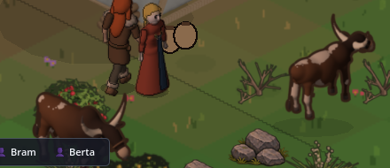
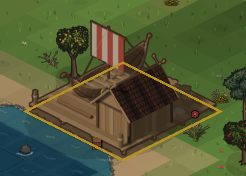
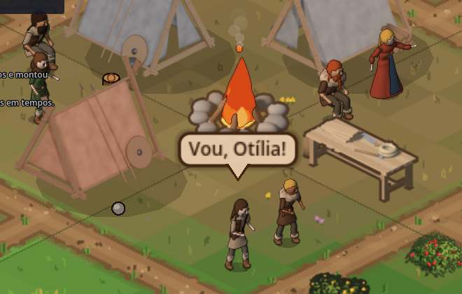
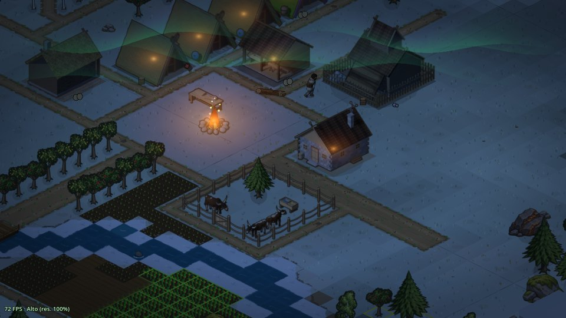
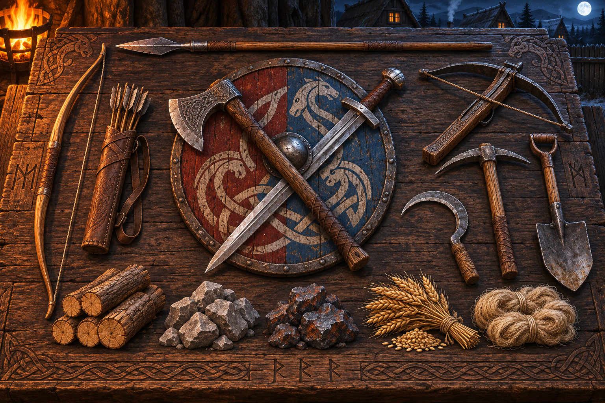

O começo
Um simulador de vila medieval
Da primeira fogueira
ao reino que ficará na história.
Cinco sobreviventes. Poucos recursos. Um mundo vivo. Construa, plante, forme famílias e lidere seu povo contra aquilo que espreita além das muralhas.
05 colonos iniciais
04 estações vivas
∞ histórias possíveis
A saga começa pequena
Você não recebe um reino.
Você o constrói.
Em Synir Þrumu, cada tronco cortado e cada campo arado empurram a colônia para a próxima era. O mapa não é apenas cenário: ele alimenta, ameaça e transforma o seu povo.
A fundação
Vilarejo
Casas, ofícios, estradas e famílias.O legado
Cidade
Produção avançada, muralhas e exército.Tempo & sobrevivência
O mundo não espera.
Dia e noite mudam a rotina. A cada três dias chega uma nova estação. Plante na primavera, prepare-se para colher no outono e veja os aldeões voltarem para casa quando o céu escurece.
Pessoas, não peças
Cada vida carrega uma história.
Nomes, antigas profissões, traços, fome, cansaço e família. Os adultos criam laços, as crianças herdam ofícios e o crescimento da população exige novas moradias.
Produção conectada
Nada surge do vazio.
Madeira vira ferramenta. Trigo passa pelo moinho e pela padaria. Depósitos separados mantêm alimentos e materiais organizados enquanto a vila ganha escala.
Arquivo do Jarl
Wiki do jogo
Colônia
Aldeões e famílias
Cada personagem possui nome, profissão anterior e aptidões. O jogador escolhe quem coleta madeira, ara o campo, constrói estradas ou assume um ofício.
- Barraca: abriga uma pessoa e não forma família.
- Casa: abriga dois adultos e até três crianças.
- A fome aumenta conforme o esforço do dia.
- Filhos crescem, herdam profissões e depois precisam de casa.
Mundo vivo
Tempo e estações
O calendário organiza trabalho, descanso e cultivo. A luz muda gradualmente e o anoitecer chama os aldeões de volta para comer e dormir.
PrimaveraplantioVerãocrescimentoOutonocolheitaInvernopreparo
Agricultura
Da terra para a mesa
O campo passa por etapas reais e exige tempo de trabalho. As culturas alimentam pessoas, animais e cadeias de produção inteiras.
01 Arar→02 Semear→03 Regar→04 Crescer→05 Colher
TrigoTrigo → Moinho → Farinha → Padaria → Pão
MilhoCru para galinhas • Moído para vacas, ovelhas e porcos
CapimAlimento direto para rebanhos
Natureza
Recursos do mapa
Florestas, rochas, minérios e rios definem onde a vila pode prosperar. Árvores comuns rendem troncos e galhos; frutíferas permitem colher ou derrubar.
- Árvore comum: 1–2 troncos e 1–3 galhos.
- Cada árvore pode soltar no máximo uma muda do próprio tipo.
- Água possui margens, pedras, profundidade e movimento visual.
Pecuária
Animais e dietas
Rebanhos agem como criaturas vivas: caminham, pastam, descansam e atravessam o mapa em pequenos grupos.
Novo na 2.0.1: vacas e bois nórdicos, com chifres longos em curva e pelagem castanho-escura com manchas brancas. O boi é maior, com cupim e sino; a vaca dá leite.

Porcos frutas, milho moído ou capimVacas e ovelhas capim ou milho moídoGalinhas somente milho cru
Construção
Vila e logística
Estradas aceleram deslocamentos e depósitos sustentam o crescimento. Alimentos ficam separados de madeira, pedra, minério e ferramentas.
- Depósitos possuem versões aprimoradas e maior capacidade.
- Ruas de terra e pedra se conectam de forma orgânica.
- Cercas se alinham automaticamente por direção.
Guerra
Comando tático em tempo real
Selecione várias unidades com o mouse, filtre por função e dê ordens diretamente no campo de batalha. A preparação e a formação certa importam tanto quanto o equipamento.
Linha de frente Em linha • Em V • Parede de escudos • Agrupar • EspalharArtilharia Linha de tiro • Espalhar • Agrupar • Correr • RecuarSeleção rápida Somente guerreiros • arqueiros • besteiros • todos
Novo na 2.0
A saga da vila
No alto da tela fica a saga: uma meta de cada vez, com barra de progresso e recompensa. Quando ela se cumpre, a Freyja vem contar e a próxima aparece.
- Primeiro teto, Mãos de artesão, Despensa farta, O primeiro inverno.
- Dez almas, Casa dos deuses, Olhos no mar, Primeira viagem.
- Paredes de pedra, Escudo da vila e, no fim, Filhos do Trovão.
- Cada meta dá materiais, comida, moedas ou armas.
Novo na 2.0
O inverno cobra o preço
Cada casa ocupada queima lenha (Galhos) a cada dia de inverno. No outono os moradores levam a lenha do depósito para as casas sozinhos: o seu trabalho é juntar galhos e comida a tempo.
- 2 Galhos por casa por dia no primeiro ano, 3 depois.
- Casa sem lenha ou dormir ao relento: o povo passa frio, fica triste, perde vida e sente mais fome.
- Três dias seguidos de frio e a família vai embora.
- O painel mostra a lenha guardada e quantos dias de comida restam.
Novo na 2.0
Cais de Expedições

Construa o Cais encostado na água (rio, lago ou mar). Selecione-o e mande o drakkar: a tripulação sai do mapa levando provisões e volta ao amanhecer do dia marcado com o saque. Não se navega no inverno.
Bosque da Ilha Vizinha 2 dias • madeira, galhos, fibra e mudas frutíferasRochedos do Norte 3 dias • pedra e minérioAldeia dos Pescadores 3 dias e 20 moedas • comida, lã, trigo e às vezes um novo moradorRuínas do Covil Goblin 4 dias • moedas, minério e armas, com risco alto
A chance de sucesso sobe com gente forte, armas, escudos e soldados do exército. Quem volta ferido trabalha mais devagar por alguns dias.
Novo na 2.1
Moradores com personalidade

Cada viking decide pelo seu jeito: atributos (espírito de equipe, disciplina, determinação, juízo, liderança), traços (trabalhador, preguiçoso, sociável, solitário, religioso, medroso...), humor, cansaço, fome, frio e família.
Vida na vila fogueira, sagas, preces no templo, olhar o mar, treino, dança, brindes, brincar com os filhos e conversas entre dois moradoresAjuda quem passa ajuda quem puxa um tronco sozinho; à noite só os dedicados ficam; amigos se ajudam maisUrgência quando falta comida, lenha, fibra ou ferramenta, quem tem juízo corre resolver e avisaCrianças a partir de 6 anos catam galhos e frutas perto de casa sozinhas
Mais de 170 falas nórdicas, como "Espero poder lutar uma batalha novamente...". Os moradores também pedem construções: "Precisamos de um hof para fazer o blót aos deuses!". Atalho: G, P, R e C apertados de novo avançam pelas opções do menu.
Novo na 2.2
A vila com cara de norte

Cores frias de musgo, ardósia e mar do norte. No inverno a neve cobre o chão e as bordas do rio congelam; nas noites limpas aparece a aurora boreal.
Noite a fogueira ilumina em volta e solta brasas, as janelas acendem e há tochas no Templo, no Cais e no Centro de TreinamentoClima chuva inclinada pelo vento, neve caindo e névoa rente aos rios e ao pé das serras nas manhãs friasAves corvos rodando a vila e o acampamento goblin; gaivotas em volta do Cais
Novo na 2.3
A chuva traz fartura
Nos dias de chuva brotam vários matinhos perto da vila. Cada um rende 2 frutinhas e 1 galho numa colhida só.
Comida o estoque agora dura o dobroColeta galhos e fibra rebalanceados; o inverno ainda pede estoque de galhosExército ordens com clique direito, formações, foco em um goblin, flanco e arqueiros que recuamCercados podem ficar encostados sem sobrepor, e tirar um animal não deixa a corda presa
Novo na 2.4
A Marcenaria arma a vila
A Marcenaria agora faz tudo o que a Mesa faz e todos os itens de guerra, 25% mais rápido. Escolha um artesão e deixe lanças, espadas, escudos, arcos e machados em "Manter no estoque".
Fabricação o artesão para exatamente na quantidade que você pediuGuia dos deuses tutorial curto, com avisos de Odin, Thor, Freyja e FreyrFalas novas frases nórdicas para os moradores
Novo na 2.5
Casas especializadas, caça e gestão da vila
Um novo painel retrátil de População no canto esquerdo traz cards para definir tarefas, armas e exército sem clicar morador por morador. Coelhos e cervos agora vivem e se reproduzem nas matas da ilha.
Casas especializadas evolua casas para Caçador, Fazendeiro, Lenhador, Coleta ou Minerador com automação da família e detalhes únicosCaça residente coelhos e cervos vivem na ilha, se reproduzem e rendem carneDepósitos e batalha depósito inicial fixo, novos depósitos com 600 espaços e ícones de armas no topoDecoração luminárias de galhos com tocha animada iluminando a noite e pedras rúnicas
Nenhum capítulo corresponde à sua busca.
O aço decide o que a muralha não conteve
Dê ordens.
Mantenha a linha.
Goblins se movem, atacam e defendem seus assentamentos. Seus guerreiros respondem em tempo real: forme uma parede de escudos, proteja os arqueiros, avance em V ou recue antes que a linha se rompa.
01 Selecione02 Forme03 Comande
Arsenal do construtor
Feito à mão.
Forjado para sobreviver.

Da primeira pá à última espada.
Ferramentas iniciam a colônia. Armas e escudos mantêm vivo tudo o que ela construiu.
Perguntas do assentamento
Antes de acender a fogueira
Qual é o objetivo principal do jogo?+
Começar com cinco pessoas em um pequeno acampamento e transformar o local em um vilarejo, uma cidade e, por fim, um assentamento capaz de sobreviver às estações e aos inimigos.
Posso escolher quem executa cada trabalho?+
Sim. Os aldeões podem ser selecionados individualmente ou em grupo para coletar recursos, construir, abrir estradas, arar campos e assumir ofícios.
Como funciona o combate?+
O comando é em tempo real, com seleção por marcação, filtros por tipo de unidade e formações rápidas para linha de frente e tropas de longo alcance.
O jogo já está finalizado?+
Synir Þrumu está em desenvolvimento ativo. Sistemas, arte, desempenho e equilíbrio continuam sendo refinados a cada nova versão.
Uma vila. Um povo. Uma saga.